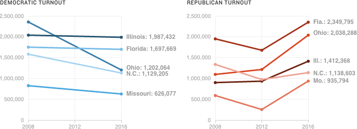

The GOP continues to dwarf its past turnout numbers. In all five states last night, Republican turnout improved upon 2012 levels. In Democratic contests, turnout was down to varying degrees, according to the latest figures.

Notes
Missouri’s Republican primary was nonbinding in 2012, which likely helped depress turnout. 2016 numbers are current as of publication time, with 100 or nearly 100 percent of precincts reporting in all states.